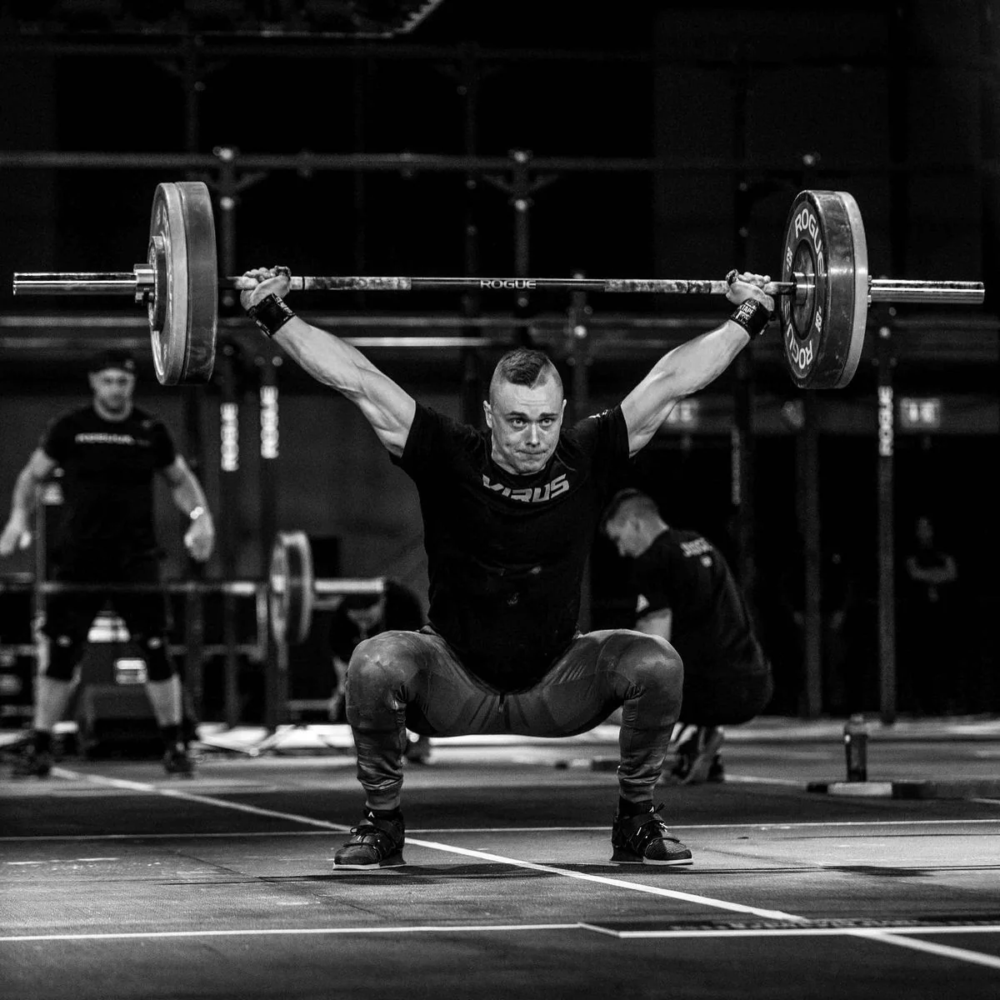

Jusqu’à 8 personnes par cycle
Prépa compétitions
Un groupe, une échéance et des séances qui te préparent aux enchaînements du jour J.

8 semaines · Mardi et jeudi à 19 h 30
Premier HYROX
En solo, tu travailles la régularité entre la course et les stations. En duo, vous testez votre allure commune, la répartition des répétitions et les relais.
- Semaines 1–2 · Repères d’allure et prise en main des stations.
- Semaines 3–6 · Course et stations enchaînées, stratégies solo ou duo.
- Semaines 7–8 · Simulation partielle, bilan puis allègement avant l’épreuve.
189 € adhérent · 249 € extérieur
Demander une place6 semaines · Vendredi à 19 h 30 et samedi à 9 h 30
Première compétition de CrossFit
Pour les pratiquants qui connaissent déjà les mouvements de base et veulent découvrir les exigences d’une journée de compétition, y compris en catégorie adaptée.
- Semaines 1–2 · Standards, mouvements et choix de catégorie.
- Semaines 3–5 · Gestion des transitions et de plusieurs efforts dans la journée.
- Semaine 6 · Simulation sur deux épreuves et retour du coach.
159 € adhérent · 219 € extérieur
Demander une place
6 semaines · Club pilote de Montreuil
ATHX Games
Travaille la force, la course et les efforts successifs. Le groupe inclut un parcours amateur et des variantes pour les athlètes confirmés, déterminées lors de la séance de repérage.
- Repères de force et d’allure, puis choix des charges.
- Travail en blocs et gestion des transitions.
- Simulation à la box et bilan individuel.
159 € adhérent · 219 € extérieur
Demander une placeAvant de réserver
Comment choisir entre les trois cycles ?
HYROX te prépare aux enchaînements course et stations. Le cycle CrossFit travaille les standards de mouvements et la gestion de plusieurs épreuves. Le cycle ATHX Games te fait travailler par blocs avec des efforts de force et d’endurance. Si tu hésites, indique ton objectif et ton expérience dans le questionnaire.
Que se passe-t-il pendant la simulation ?
On reproduit une partie des enchaînements pour te permettre de tester tes repères, puis tu prends le temps de faire le point avec un coach. En duo, vous testez aussi vos relais et la répartition de l’effort.
Faut-il déjà être inscrit à une compétition ?
Tu peux indiquer une épreuve envisagée. Si tu as une date, elle nous aide à t’orienter vers le cycle correspondant.
Le prix inclut-il le dossard ?
Le prix couvre les séances du cycle et la simulation. L’inscription à l’événement se fait auprès de son organisateur.
Mon partenaire doit-il faire aussi une demande ?
Oui, chaque personne renseigne ses coordonnées elle-même. Indique le format duo dans ta demande pour que le coach puisse vous orienter.